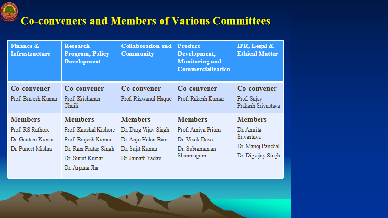
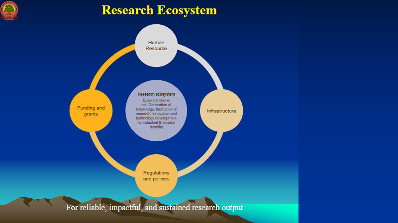
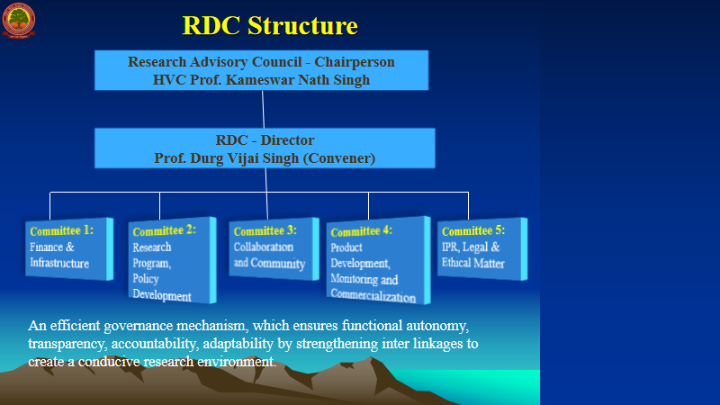
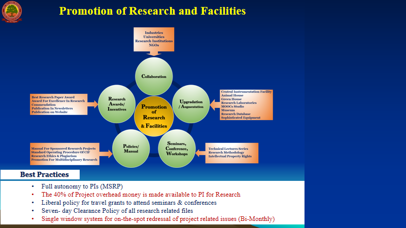

About the R&D Cell
The Central University of South Bihar (CUSB), Gaya, is a premier research-cum-teaching university established by an Act of Parliament in 2009. Faculty actively conduct basic, applied, and cross-cutting interdisciplinary research supported by major national and international grants from DBT, DST, JSPS, SERB, UNEP, UGC, ICMR, ICSSR, BRNS, and MoEF. University departments have also received substantial funding under DST-FIST and the Pandit Madan Mohan Malaviya National Mission on Teachers and Teaching (PMMMNMTT).
Over the preceding five years, faculty published 469 high-impact research papers, international monographs, and books with over 3,106 citations and an H-index of 83. The RDC was formally constituted under UGC Guidelines to steer strategic research management and institutional corpus development.
🎯 Vision
To put in place a robust, transparent institutional mechanism for developing and strengthening the research ecosystem in CUSB, aligned with the transformative provisions of NEP-2020.
🚀 Mission
Create a conducive environment for enhanced research productivity; foster deep partnerships across industry, government, and global agencies; and mobilize resources for cutting-edge investigations.
RDC Research Framework & Functions




Key Initiatives & Achievements
- Formulated Standard Operating Procedures (SoPs) for university-industry collaborative research and product-development processes.
- Organized prestigious DST-STUTI training workshops on Advanced Immunological Tools and Techniques, as well as Research Instrumentation in Physics and Biotechnology.
- Collaborated and signed strategic MoUs with prominent national and international research organizations, including joint SATHI infrastructure proposals with IIT Patna.
- Established a single-window administrative support system for Principal Investigators, GIS analytics training for postgraduate scholars, and grant-application guidance sessions.
- Conducted awareness programmes on research ethics, generative AI in academia, and plagiarism prevention.